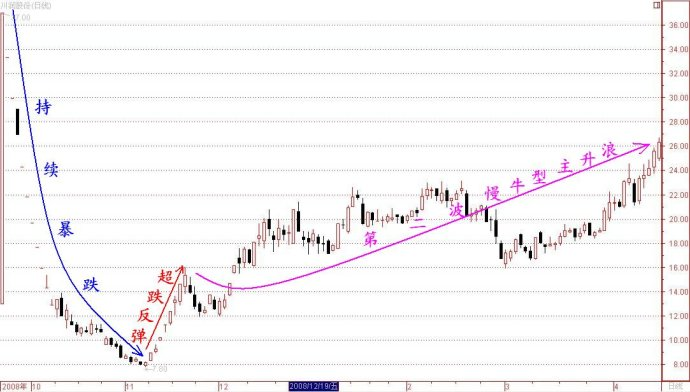
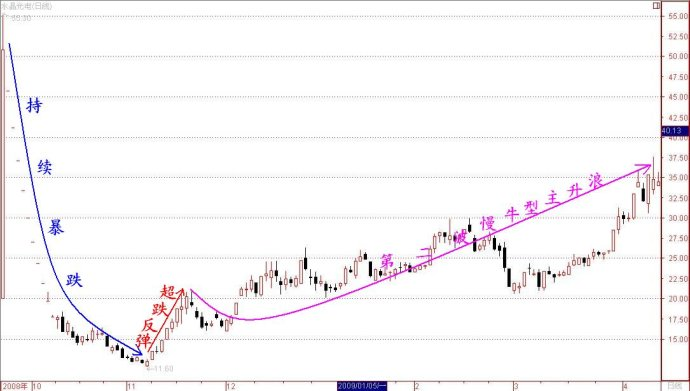
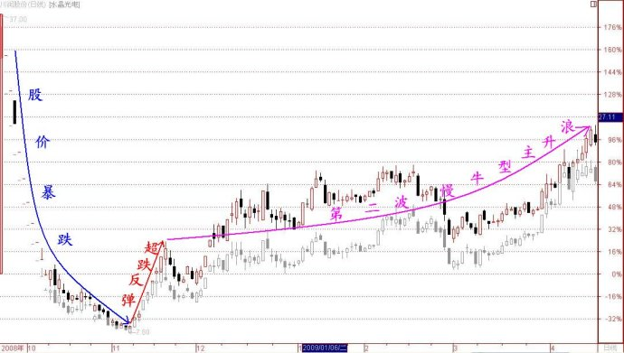

第202篇•教你炒股系列56:主升浪的形态（7）
谷为陵
我在上文谈到“大阳线涨停板”型主升浪有四个成因：一是股价超跌反弹，二是有朦胧的个股大利好，三是有突发性的（政策性）行业利好，四是比价效应。我下面就详细分析一下这四个成因，并列举相应的实战案例。
①因超跌反弹形成的“大阳线涨停板”型主升浪
所谓超跌反弹，就是股价经过短期暴跌或者长期大幅下跌后，股价出现报复性反弹的现象。而因超跌反弹形成一轮连续“大阳线涨停板”型主升浪，则是超跌反弹中最极端的方式，也是短线交易者最感兴趣的股价运行模式，因为它蕴含重大的短期暴利机会。
虽然超跌反弹主要由于股价暴跌而引发的，且主要出现在次新股和低价股中，但若细究起来，它或多或少还是有一些原因的，形成所谓的“超跌+题材”的组合效应。我看了一下，按照“超跌+题材”的成因进行分析，超跌反弹形成连续“大阳线涨停板”型主升浪可有四种成因：
一是纯粹的超跌反弹，没有任何可知的利好题材因素，这是超跌反弹的最基本的模式。
二是有不确定的“公开性”利好，主要是指市场一直广为流传的、但始终没有兑现的利好题材，比如，前期一直炒得沸沸扬扬的赣州稀土借壳
ST昌九（600228）的传闻，就造成该股暴涨暴跌。
三是有隐含的利好题材。这类隐含利好本来一直是上市公司基本面的一部分，原先并非算什么利好，但由于经营环境的剧烈变化而变成了利好因素。如，因土地大幅增值而陡然出现大量隐蔽资产，最典型的案例就是2008年底的中路股份（600818），该股因越传越广的迪斯尼题材而暴涨9个涨停板。隐含利好的特点是，起初只被极少消息灵通人士知晓，不为大众所知，但随着时间推移和股价上涨，越来越多的投资者打探到了其中的利好题材，题材效应逐渐蔓延，而股价也不断上涨。要注意的是，隐含利好题材不属于内幕利好，内幕利好是原先根本不存在的、由控股股东人为制造的、普通投资者事先永远不知道也不可能打探出来的利好，如，重大的资产注入、资产重组等信息，这些信息只有在上市公司公告后才能够被市场知晓。
四是突发性的“利好”事件。这个“利好”之所以加引号，是因为这些突发性事件从表面上或者从行业关联性方面看，对于某些上市公司具有一定的利好想象空间，但实质上到底能够给相关上市公司带来怎样的现实利益，却是一个未知数。这样的股票往往会因突发性的“利好”事件而暴涨，但在多数情况下，因利好只是停留在概念阶段，股价最终会被打回原形。如，2008年四川“5.12”大地震后，四川路桥（600039）就走出了连续7个涨停板，但其后股价又出现了更深的暴跌；再如，今年4月青海明胶（000606）因突发性的明胶事件而出现了5个“一字板”，但现在该股股价已经几乎跌回当初主升浪的启动点。
根据以上的分析，我现在举一些相关的实战案例，以让大家更容易理解。
案例1：超跌反弹主升浪案例——川润股份（002272）与水晶光电（002273）
2008年9月19日，川润股份与水晶光电上市同时上市，在上市当天这两只股票股价均遭到短暂爆炒。但自上市第二天开始的两个月里，恰逢股市持续下跌，这两只股票又出现了连续暴跌，先是连跌了罕见的10个跌停板，其后股价继续大跌，最终这两只股票股价不仅跌破了上市首日的开盘价，还大幅跌破了发行价格。
但自2008年11月10日，随着上证指数的企稳反弹，这两只股票立即出现了一波超跌反弹型主升浪。为了论证它们的主升浪是因为超跌反弹，而非其它的利好因素刺激所为，我将这两只股票主升浪期间的K线走势进行了叠加，从叠加图上可以非常清楚地看出，它们主升浪的K线形态几乎是相同的，具有完全同步的上涨节奏。这就说明这两只股票的短期暴涨，不是缘于它们自身的内在原因，而完全是因超跌反弹。这确实是一个很典型的案例。下面是这两只股票的几张单独K线走势图与K线走势叠加图：
a、川润股份K线图:

b、水晶光电K线图：

c、K线走势叠加图（其中，红色K线代表川润股份，浅黑色K线代表水晶光电，右侧坐标为百分比坐标）：

由于这两只股票均经过短期大幅暴跌，在股市刚刚企稳的情况下，就展开了报复性的反弹，它们的第一波超跌反弹就形成了连续“大阳线涨停板”型主升浪，股价在短短8个交易日内就翻了一倍。但犹如压抑过久的火山一样，虽然经过了第一次猛烈的喷发，但能量还未用尽——这两只股票在其后的4个多月里，股价继续慢涨，演变成了慢牛，最终股价自2008年11月底至2009年4月初上涨了2倍多，成为了当是股市里的两只大黑马。
其实，不仅仅是这两只股票在当时出现了这样的“暴跌---暴涨”走势，当时还有一些上市后就大跌的次新股也都出现了大涨行情，只不过是这两只股票的走势更为典型而已。从这两只股票的走势我们可以得到这样的启示：在大熊市末期或者在股市中级反弹前夕上市后就暴跌的次新股，一旦大盘展开反弹，那么，这些暴跌的次新股往往会蕴含着较大概率的爆发性反弹的机会，是短线选股和操作的重要目标之一。
（未完待续）